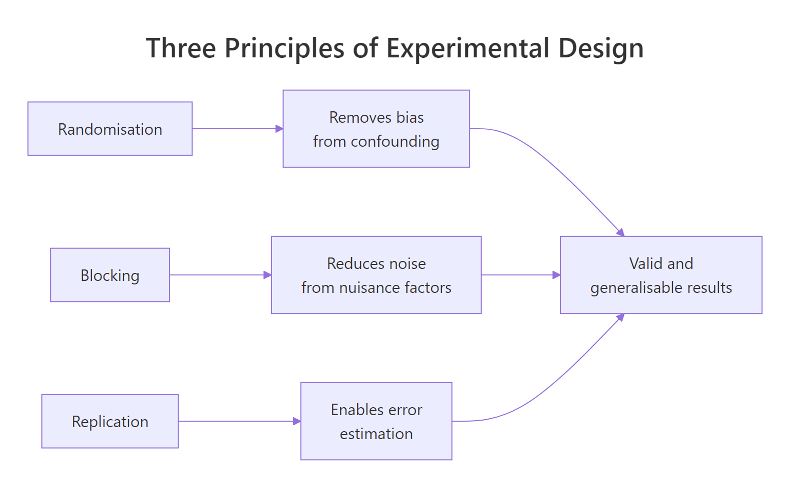
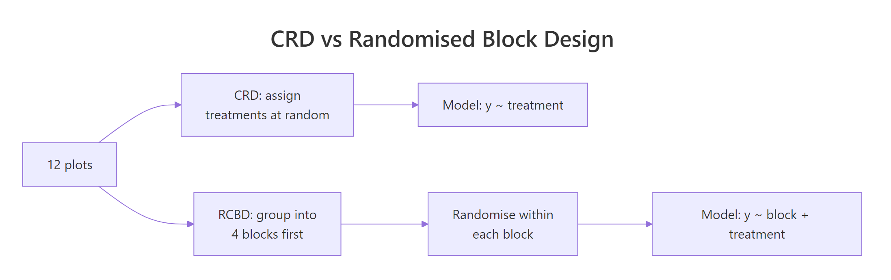
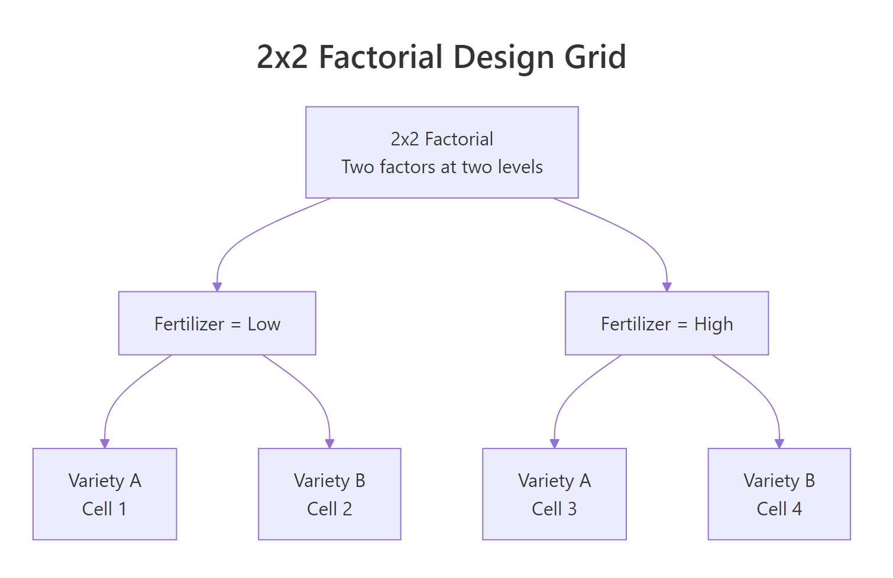

Experimental Design in R: The Three Principles That Make Results Valid and Generalisable
Experimental design in R rests on three principles: randomisation assigns units to treatments by chance, blocking groups similar units to control known nuisance variation, and replication repeats each treatment enough times to estimate error. Applied together, they make your aov() results both internally valid (the treatment caused the effect) and generalisable (the result holds beyond this sample).
What makes an experiment scientifically valid?
A valid experiment lets you claim two things with confidence: the treatment caused the observed difference, and the result generalises beyond the exact units tested. Lose either and the analysis collapses, because no ANOVA can rescue a badly designed study. The fastest way to see why is to simulate the same scientific question twice, once with biased assignment and once with random assignment, then compare what each tells us.
Same response values, same sample size, same aov() call. The confounded analysis finds a "drug effect" at p < 0.01, even though the drug has zero true effect in the simulation: the difference was caused by soil nitrogen, not by the drug. Random assignment disconnected treatment from soil, so the p-value correctly reports "no evidence of an effect." That is why every valid experiment starts with random allocation.

Figure 1: How the three principles of experimental design combine to support valid and generalisable inference.
Try it: Change set.seed(101) to set.seed(7) and rerun the block above. Does the confounded p-value stay small? Does the randomised p-value behave differently?
Click to reveal solution
Explanation: The confounded assignment is pinned to the soil gradient, so it will always look significant regardless of seed. The randomised assignment breaks that link, so its p-value is unrelated to the nuisance variable.
How does randomisation remove confounding bias?
Randomisation is simple to state: give every unit an equal chance of being assigned to each treatment. In R you do this with sample(). The point is not the mechanics, it is the statistical gift that follows: any hidden variable, measured or not, becomes independent of treatment on average. Your aov() residuals then cleanly represent chance variation, not systematic bias.
Start with a blank slate of 12 experimental units and a target of 3 treatments with 4 replicates each. You need a plan that assigns each unit to one treatment, with the assignment shuffled by chance.
The pattern is: build the balanced vector first with rep(..., each = 4), then shuffle it with sample(). This guarantees exactly 4 units per treatment, only the order is random. A second quick check confirms the allocation is balanced.
Four units per group, as planned. Had you called sample(c("A","B","C"), 12, replace = TRUE) instead you would get roughly balanced groups, but imbalance creeps in through randomness alone. The rep + sample idiom is the reproducible way to randomise a balanced design.
set.seed() before any randomisation. Reproducibility is not optional: reviewers, collaborators, and your future self all need to run the same randomisation and get the same layout. A different seed means a different experiment.Now simulate realistic responses for this CRD and fit the aov. The data mimic a three-treatment comparison where treatment C is truly a bit better than A and B.
The F-test says "borderline": p = 0.055 with only 4 replicates per treatment. The result is unbiased because we randomised, but it is noisy because 12 plots is not many. Blocking will shrink the noise without adding plots, and replication will shrink it further by adding them. Both principles come next.
Try it: Randomise 24 units across 4 treatment levels (label them W, X, Y, Z) with 6 units per level, then verify the allocation with table().
Click to reveal solution
Explanation: rep(c("W","X","Y","Z"), each = 6) creates a perfectly balanced vector of length 24. sample() shuffles its order, producing a randomised-but-balanced assignment.
Why does blocking reduce experimental error?
Randomisation deals with unknown nuisance variables, but what about the ones you already know about, like soil moisture differing by field strip or patient age group in a trial? Blocking handles these directly: group similar units into blocks, then randomise treatments within each block. The block effect gets its own line in the aov table, and treatment comparisons are made within blocks where nuisance is held constant.
The cleanest way to see blocking pay off is to analyse the same response values twice: once pretending there is no block (CRD), once acknowledging the block (RCBD). Build a dataset where two field strips differ in baseline yield and each strip gets all three treatments.
Ignoring the block, the residual mean square is 16.17 and the F-test for treatment misses the 5% threshold (p = 0.10). The block variance got dumped into residuals, where it drags the denominator up and the F-statistic down. Now rerun with the block added to the model.
Same response values, same treatment effect, but the residual mean square collapsed from 16.17 to 0.85. The block accounted for 128 of the 145 "residual" sum of squares the CRD had lumped together. With residuals this small, the treatment F-test now returns p ≈ 0.00002: overwhelmingly significant. That is blocking in one aov table.
Why does this work mathematically? The total variation in the response is fixed: the CRD model splits it two ways (treatment + residuals), while the RCBD model splits it three ways (treatment + block + residuals). The slice carved off for the block stops being noise, so residuals shrink, and since F is signal over noise, the F-statistic for treatment rises.
$$MS_E^{CRD} \;\approx\; \frac{SS_{block} + SS_E^{RCBD}}{df_{block} + df_E^{RCBD}}$$
Where:
- $MS_E^{CRD}$ is the residual mean square when you ignore blocks
- $SS_{block}$ is the sum of squares the block explains
- $SS_E^{RCBD}$ is the residual sum of squares after fitting the block
- $df$ are the corresponding degrees of freedom

Figure 2: Randomisation layout differs between CRD and RCBD; the extra step in RCBD is grouping similar units before randomising within each group.
Try it: Refit fit_rcbd but use yield ~ treatment only (drop the block term). Is the residual mean square closer to 0.85 or to 16.17?
Click to reveal solution
Explanation: Dropping the block absorbs the block's sum of squares back into residuals. Residual MS jumps from 0.85 to 16.17 and the treatment F-test loses its significance. The block was carrying real variance out of the error term.
How much replication do you need for reliable inference?
Replication is the principle that supplies the denominator for every inferential test. Without repeated measurements you cannot estimate error, and without an error estimate no p-value exists. More replicates also mean more residual degrees of freedom, tighter confidence intervals, and higher power to detect real effects. The pwr package turns this principle into a concrete sample-size recommendation.
Use pwr.anova.test() to answer the question "how many replicates per group do I need?" It takes the number of groups (k), the effect size (Cohen's $f$), the significance level, and the desired power. Leave n out and it solves for the replicates you need.
The numbers jump an order of magnitude as effect size shrinks: 22 replicates per group for a large effect, 322 for a small one. A single experiment with 4 replicates per group (what we had in the CRD earlier) has almost no chance of detecting a small effect. Replication is the lever that turns "interesting pattern" into "statistically defensible finding."
To see this in action, simulate the same treatment difference twice, once with n = 3 per group and once with n = 10.
The n=3 design misses the real effect entirely (p = 0.40), while the n=10 design catches it confidently (p = 0.002). Under-replication does not make your results wrong, it makes them invisible. A non-significant result from a small study tells you nothing about whether an effect exists.
Try it: Use pwr.anova.test() to find the replicates per group needed for k = 4 groups, f = 0.4, power = 0.90.
Click to reveal solution
Explanation: Going from 80% to 90% power requires roughly 30% more replicates. Adding a fourth group also slightly raises the required n per group relative to three groups at the same effect size.
How do factorial designs test multiple factors at once?
When two factors both matter, running separate experiments for each one is wasteful and misses something important: the interaction. A factorial design crosses every level of one factor with every level of another, so every plot contributes data to both main effects at the same time. In R this is one line: aov(y ~ A * B), where * asks for both main effects and their interaction.

Figure 3: A 2x2 factorial design crosses two factors at two levels each, giving four treatment cells and enabling main-effect and interaction tests in a single aov().
Simulate a 2x2 field trial: two fertilizer levels crossed with two crop varieties, 4 replicates per cell, 16 plots total.
Three lines of statistical output, three questions answered in one experiment. The fertilizer:variety row is the interaction test: its p-value of 0.009 says the fertilizer effect is not the same for every variety. That changes how you report the main effects: now you describe the effect of fertilizer within each variety, not as a single number. Visualising this makes the interaction obvious.
If the two lines were parallel the interaction would be zero: one factor's effect would not depend on the other. Here they diverge: variety B responds more strongly to high fertilizer than variety A does. That is the kind of recommendation factorials are built to deliver ("use high fertilizer, especially for variety B"), and a one-factor-at-a-time approach would have missed it entirely.
Try it: Refit the factorial but swap the * for +, giving aov(yield ~ fertilizer + variety, data = fact_df). Which row of the previous output disappears, and why?
Click to reveal solution
Explanation: + fits only main effects. The interaction sum of squares (19.6 earlier) now falls into the residual, inflating the residual MS from 2.0 to 3.3. You still see the two main effects, but you have no statistical handle on whether they combine additively or interactively.
Practice Exercises
Three capstone exercises, ordered by difficulty. Each exercise uses distinct variable names (prefixed with my_) so it does not overwrite anything from the tutorial.
Exercise 1: Randomise then analyse
Randomise 15 experimental units across 3 diet treatments with 5 units per diet (label them diet1, diet2, diet3). Use set.seed(555) for reproducibility. Then fit a CRD aov on the response values provided and report the F-statistic.
Click to reveal solution
Explanation: Because we shuffled with sample() before pairing to the fixed response vector, treatment labels are independent of the response pattern. The test returns a non-significant F, which is exactly what randomisation guarantees when the "treatments" are just labels on arbitrary values.
Exercise 2: Pick the right design
You are testing 3 fertilizer types on wheat yield. The field has a clear east-to-west moisture gradient (eastern strips are wetter than western strips), and you can divide the field into 4 north-south strips (blocks) that each run from east to west through the gradient. Decide whether to use CRD or RCBD, justify it in one sentence, and write the aov formula you would use.
Click to reveal solution
Decision: Use RCBD. The east-to-west moisture gradient is a known nuisance source that varies within each north-south strip, so blocks need to run perpendicular to the gradient. If the 4 strips each span the full east-to-west range, each strip contains the full gradient, and the block identity itself carries no moisture information.
Actually, reread carefully: the strips run north-south through the east-west gradient. That means moisture varies within each strip (east to west) but is comparable across strips (each strip samples the full gradient). So blocking on strip would not help. The right move is to sub-divide each strip east-to-west and block on east-west position, ensuring each fertiliser appears in every moisture zone.
Correct aov formula: aov(yield ~ moisture_zone + fertilizer, data = field) where moisture_zone labels the east-west position of each plot.
Explanation: The block should capture the nuisance variation. If you blocked on the wrong axis (strip ID instead of moisture zone), you would add degrees of freedom without reducing noise, and your RCBD would perform worse than a CRD. Always block on the variable that actually drives nuisance variation.
Exercise 3: Interpret the factorial
Run the following code to generate data from a 2x2 factorial where only the main effect of pesticide is real (no variety effect, no interaction). Fit the full factorial model with interaction, then answer in one sentence: is there evidence for an interaction, and what does that mean for how you describe the main effects?
Click to reveal solution
Interpretation: The interaction p-value is 0.76, so there is no evidence of an interaction. Since variety and the interaction are both non-significant, you can report the pesticide main effect as a single number across both varieties: pesticide application raised mean yield by ~6 units regardless of variety. When the interaction is absent, main effects generalise; when it is present (like our earlier fertilizer x variety example), you must report main effects within each level of the other factor.
Complete Example
Put all three principles together in one end-to-end study. A researcher wants to compare 3 fertilizer mixes (mix1, mix2, mix3) on wheat yield. The field has a known east-to-west moisture gradient, so she divides it into 4 east-to-west blocks and randomises the 3 mixes within each block. That is 12 plots total, 4 replicates per mix.
Every principle shows up in this aov table. Randomisation: the sample() step inside each block shuffles fertilizer order, protecting against any hidden within-block gradient. Blocking: the block row (p = 0.008) captures the east-to-west moisture variation, keeping it out of the residuals. Replication: 4 blocks provide the residual degrees of freedom needed to estimate error and run the F-test.
Residuals should show no obvious pattern against fitted values (constant variance) and should lie close to the QQ line (approximate normality). If they do not, revisit: a transformation, a different error structure, or a non-parametric test like Kruskal-Wallis may be warranted.
Summary
| Design | Use when | Formula | Key strength |
|---|---|---|---|
| CRD | No known nuisance factor | y ~ treatment |
Simplest, maximum residual df |
| RCBD | Known nuisance variable | y ~ block + treatment |
Removes block variance from error, sharper treatment test |
| Factorial | Testing 2+ factors at once | y ~ A * B |
Detects interactions, halves sample size vs OFAT |
The three principles in one sentence each:
- Randomisation breaks the link between treatment and any hidden variable, so your p-value reflects the treatment and not the confounder.
- Blocking moves known nuisance variation out of the residual, so the F-statistic for treatment becomes sharper without adding plots.
- Replication supplies the residual degrees of freedom that every test needs, and determines whether you will detect an effect that is truly there.
References
- Fisher, R. A. The Design of Experiments. Oliver & Boyd (1935). The original source of the three principles.
- Box, G. E. P., Hunter, J. S., & Hunter, W. G. Statistics for Experimenters: Design, Innovation, and Discovery, 2nd ed. Wiley (2005).
- Montgomery, D. C. Design and Analysis of Experiments, 10th ed. Wiley (2019).
- R Core Team.
stats::aovreference manual. Link - CRAN Task View: ExperimentalDesign. Link
- Champely, S.
pwr: Basic Functions for Power Analysis (R package). Link - NIST/SEMATECH. e-Handbook of Statistical Methods, Chapter 5: Process Improvement. Link
- Lawson, J. Design and Analysis of Experiments with R. Chapman & Hall/CRC (2015).
Continue Learning
- One-Way ANOVA in R: fit, interpret, and report a CRD with a single treatment factor.
- Two-Way ANOVA in R: go deeper on factorial main effects, Type II/III sums of squares, and emmeans.
- Statistical Power Analysis in R: decide how many replicates you need before running the experiment.
Further Reading
- Randomized Complete Block Design (RCBD) in R: Block Nuisance Variability
- Clinical Trials Design in R: Randomization, Adaptive Designs & ICC
- Optimal Experimental Design in R: AlgDesign & D-Optimal Criteria
- Experimental Design Exercises in R: 8 Randomization & Blocking Problems, Solved Step-by-Step
- Latin Square Design in R: Two-Way Blocking for Efficient Experiments